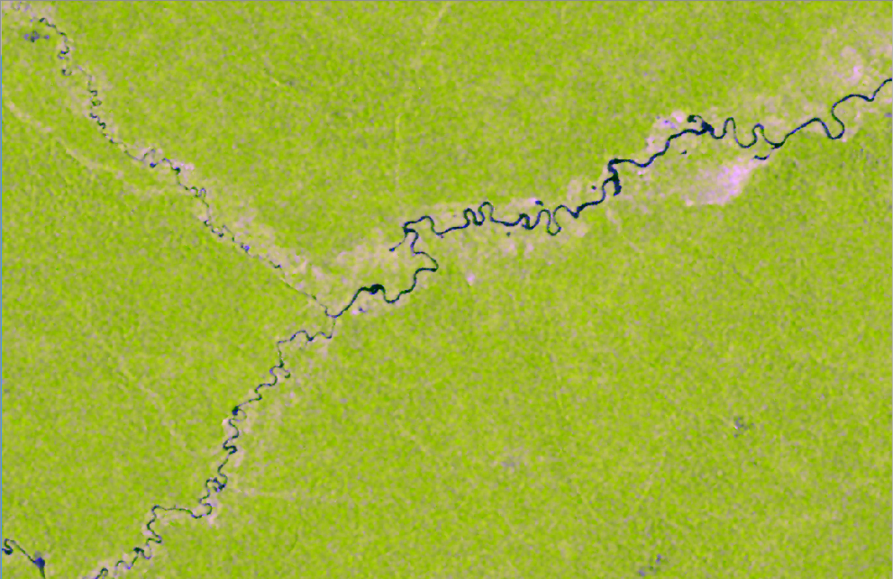

Biomass Mapping
Creating a National Map for Mexico
Created by Jesse Bishop / @jessebishop jbishop@whrc.org
About Me
I work at the Woods Hole Research Center, where I study global forests using remotely sensed data. I use many tools to do this work including:
- Postgresql/PostGIS
- Python
- R
Acquiring Data
First, we need to start gathering some spatial data
ALOS Data
Download the data
The Alaska Satellite Facility is the source for our ALOS data.
And now the data are available for free!*
*For peaceful, non-commercial work only! You must give credit to JAXA/METI.
ALOS Data
Radar Data Processing
We use GAMMA software to process ALOS data.
ALOS Data
What is radar?
ALOS Data
ASF is now providing Radiometrically Terrain Corrected data for download.
Now you don't have to do the radar processing yourself!
They also use GAMMA and produce something very similar to what we're producing at WHRC.
ALOS Data
Speckle Filtering
ALOS Data
Speckle Filtering

ALOS Data

ALOS Data
Image Segmentation
We use Berkeley Image Seg to segment the ALOS data.
Elevation Data
SRTM Data used for elevation source

From that, we produce slope information.
gdaldem slope -compute_edges -of GTiff -co "COMPRESS=LZW" -co "BIGTIFF=YES" srtm_elevation.tif srtm_slope.tif

VCF Data
Landsat Tree Cover Continuous Fields

Segmentation Statistics
For each ALOS scene, we calculate the mean, standard deviation, minimum, and maximum of:
- ALOS HH
- ALOS HV
- ALOS Layover/Shadow
- SRTM Elevation
- SRTM Slope
- Tree Cover
Building a Training Data Set
Building a Training Data Set
Building a Training Data Set
Building a Training Data Set
Some initial filtering and calculations are performed:
- Plots with 4 subplots
- Plots closest to the mean ALOS acquisition date
- Calculate tons/hectare from plots
- Averaging segment means in areas of overlap
- Simplify ecosystem type
Building a Training Data Set
SELECT z.folio, z.carbono_arboles_tpha, z.date_distance,
z.measurement_date, o.id_vegetac AS veg_type_id, o.vegetacion
AS veg_type, CASE WHEN o.vegetacion IN ('Bosque de abies',
'Bosque de ayarin', 'Bosque de cedro', 'Bosque de pino',
'Bosque de tascate') THEN 'CF' WHEN o.vegetacion IN ('Bosque
de encino', 'Bosque de galerÝa') THEN 'BF' WHEN o.vegetacion
IN ('Bosque de encino-pino', 'Bosque de pino-encino') THEN 'CBF'
WHEN o.vegetacion = 'Manglar' THEN 'MG' WHEN o.vegetacion IN
('Bosque mesofilo de monta±a', 'Selva alta perennifolia', 'Selva
alta subperennifolia', 'Selva baja perennifolia', 'Selva baja
subperennifolia', 'Selva mediana subperennifolia') THEN 'THF'
WHEN o.vegetacion IN ('Selva baja caducifolia', 'Selva baja
espinosa', 'Selva baja subcaducifolia', 'Selva mediana
caducifolia', 'Selva mediana subcaducifolia') THEN 'TDF' ELSE
'ERROR' END AS type_code, o.ecosistema AS ecosystem,
AVG(s.num_pixels) AS num_pixels, AVG(s.num_masked_pixels) AS
num_masked_pixels, AVG(s.elev_mean) AS elev_mean, AVG(s.slope_mean)
AS slope_mean, AVG(s.vcf_mean) AS vcf_mean, AVG(hh_mean) AS hh_mean,
AVG(hv_mean) AS hv_mean, AVG(lsmask_mean) AS lsmask_mean,
MIN(lsmask_min) AS lsmask_min, MAX(lsmask_max) AS lsmask_max,
COUNT(alos_id) AS num_images FROM (SELECT b.folio,
SUM(b.carbono_arboles) / 0.1598925 AS carbono_arboles_tpha,
y.date_distance, MIN(b.levantamiento_fecha_ejecucion) AS
measurement_date FROM (SELECT folio, CASE WHEN MIN(date_distance)
+ MAX(date_distance) = 0 THEN MIN(date_distance) WHEN
MIN(date_distance) + MAX(date_distance) > 0 THEN
MIN(date_distance) ELSE MAX(date_distance) END AS date_distance
FROM (SELECT folio, days_from_alos AS date_distance, COUNT(sitio)
AS plot_count FROM mexico_biomass_plots_filtered WHERE NOT
carbono_arboles IS NULL AND NOT levantamiento_fecha_ejecucion
IS NULL AND folio IN (SELECT folio FROM mexico_biomass_plots_old)
AND NOT tipificacion IN ('Inaccesible (pendiente)', 'Inaccesible
(social)', 'Vacio', 'Planeado') GROUP BY folio, days_from_alos
HAVING COUNT(sitio) = 4 ORDER BY folio) AS x GROUP BY folio) AS
y INNER JOIN mexico_biomass_plots_filtered b ON b.folio=y.folio
AND b.days_from_alos=y.date_distance GROUP BY b.folio,
y.date_distance) AS z INNER JOIN mexico_biomass_plots_old o ON
z.folio=o.folio INNER JOIN mexico_biomass_plots_model_statistics
s ON z.folio=s.folio GROUP BY z.folio, z.carbono_arboles_tpha,
z.date_distance, z.measurement_date, o.id_vegetac,
o.vegetacion, o.ecosistema;
Now that we have training data and predictor layers
Let's talk about modeling
Random Forest
A Forest of decision trees for classification or regression.
The algorithm choses the mode for classification and the mean for regression.
Non-parametric: no need for a priori information about the data distribution.
Random Forest
Model Development
Predicting Carbon
Building a Mosaic
Any Questions?